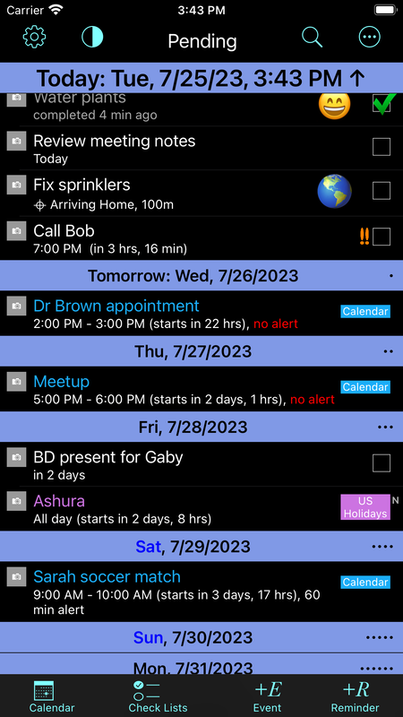
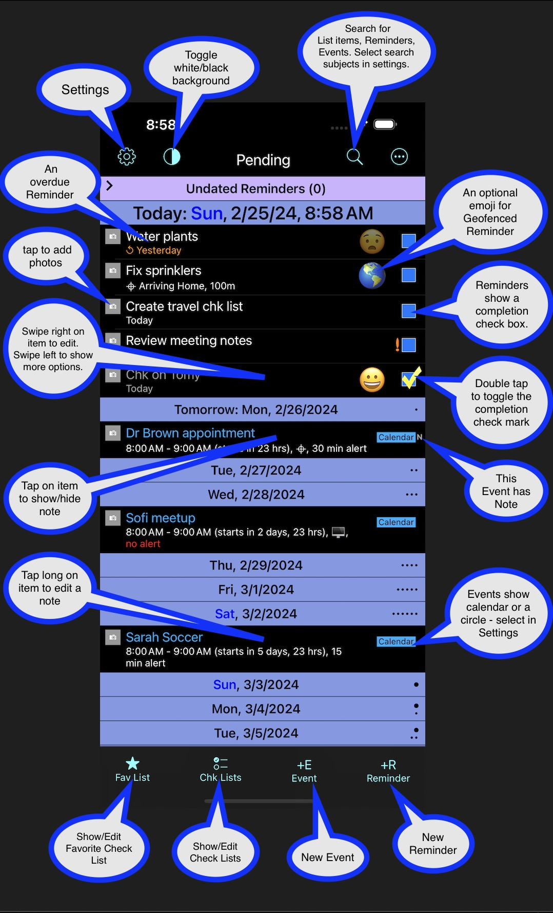

Welcome to the TimeVerse app!
TimeVerse is a time management tool. In one place it shows your Events and Reminders. The app was designed to provide maximum information in minimum space.
View on the App StoreThis page provides more complete information about the TimeVerse iOS app. Please check the status below for issues, bugs & fixes.
Please email me via the support page with any issues, and follow my Twitter account @MarkGoral for update info.
It would be of great help to have your comments and suggestions — please use the support page to send me a message. If you like the app, please post a review in the App Store. Thanks!
Status
In App Store: Rev 10.8 (307)
Fixed a bug in the Fav List button image update (star empty/filled). Quicker response to user tap at end of event (swipe right). Includes fix for completed data fetch — increased the fetch data chunk size from 30 to 90 days. Corrected the related documentation. In Settings, added an option for long touch to activate the main screen's 4 bottom buttons.
Note: Many views have a help button ("?") at the top — use it for a detailed description of the view.
I appreciate any feedback! Please use the support page to send email for support or comments.
Overview
TimeVerse is a time management tool. In one place it shows your Events and Reminders. The app was designed to provide maximum information in minimum space.
One tap on an item allows you to view an item's note. Long tap allows you to edit the item's note. Notes can contain live links to items like phone numbers, addresses, or URLs.
Two taps on a Reminder's check box toggles the Reminder's completion status.
A tap on an item's photo thumbnail allows you to view attached photos. Then you can take new pictures or attach existing ones.
You can, of course, create new Events or Reminders — time or location based.
The views are color coded; overdue reminders are shown in red. The overdue reminders count is shown on the app badge. Completed reminders and past events are shown in gray.
With TimeVerse search, you can search titles, notes, or both (option in app setup).
Rev 1.6 added support for 3D press:
- Tap on an item — same as before, shows/hides the item note if any.
- Long tap on an item — same as before, note edit.
- Light press on an item peeks a note if any. You can swipe up to edit the note.
- Hard press on an item pokes the note.
Pending Reminders/Events View

Note: This image was updated to show the current interface starting with rev 8.3. It includes Check Lists and an overflow menu.
This is the main view showing pending Reminders and Events. The Reminders have a check box on the right. The Events show the calendar name.
Quick Start

The image provides information on the main gestures & buttons in TimeVerse. This Quick Start view is also available in the app — simply tap the "i" icon from the main screen.
Please note:
- You need a DOUBLE tap to check/uncheck a Reminder check box. Double tap was selected to avoid accidental taps.
- The Events Calendars are color coded, and the color is shown along with the calendar name (can be changed in app settings). The Reminders may belong to separate lists; in the iPhone Reminders app the lists are color coded as well. For clarity, list color coding is currently ignored in TimeVerse.
- An item note may contain live links. The links can be invoked from the Note Editor — long press on the item with a note, then tap on a link.
- The Main view of pending items always shows the next 2 weeks (blue headers). The rest of the items reside in a section that can be collapsed.
- The Undated Reminders section contains Reminders with no due/alarm dates; undated geofenced Reminders are shown in the Today section.